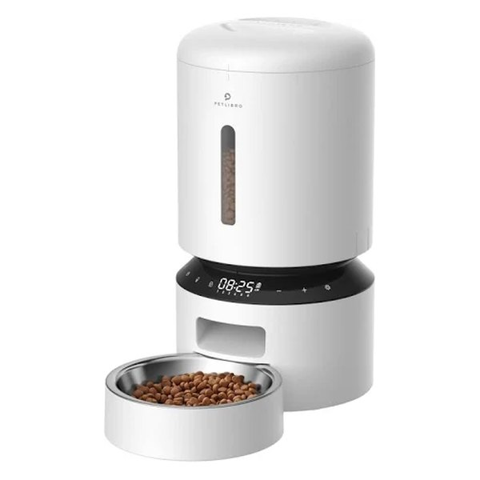
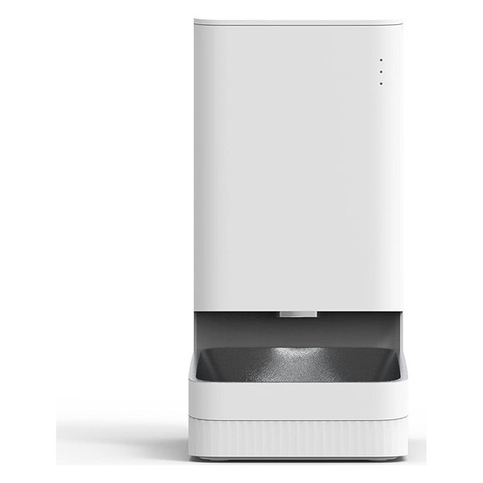
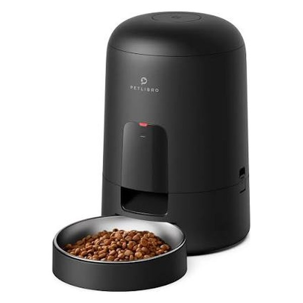
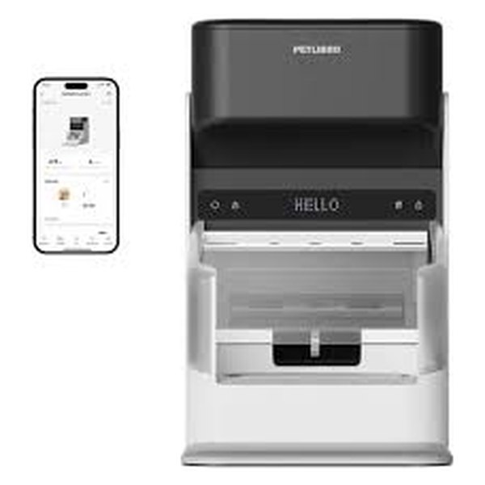
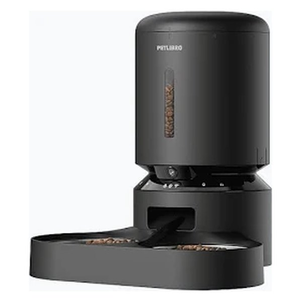

Comederos automáticos: los mejores para gatos y perros
Comparamos comederos con y sin WiFi, con batería, con cámara y con RFID para que tu mascota coma a sus horas aunque no estés.
¿Con prisa? El Xiaomi Smart Pet Food Feeder es el más equilibrado
Se controla desde el móvil, admite hasta 1,8 kg de pienso y cuesta bastante menos que los modelos con cámara o RFID.
Comparativa rápida
| Modelo | WiFi / app | Capacidad | Destaca por | Ideal para |
|---|---|---|---|---|
| PETLIBRO 5 L programable | No | 5 L | Sencillez, sin app | Quien quiere algo fácil |
| Xiaomi Smart Pet Food Feeder Recomendado | Sí | 1,8 kg | App y gran capacidad | La mayoría de casas |
| PETLIBRO Air | Sí | 2 L | Funciona con batería | Sitios sin enchufe |
| PETLIBRO RFID | Sí | 3 L | Solo se abre a su gato | Varios gatos o dietas |
| PETLIBRO con cámara | Sí + cámara | 5 L | Cámara y 2 cuencos | Ver a tu mascota |
Datos según la ficha de cada producto en Amazon.es y del fabricante. Pulsa en cada botón para ver el precio y la disponibilidad actual.
Análisis de cada modelo
PETLIBRO comedero automático 5 L (sin WiFi)

Un comedero programable de toda la vida: eliges las horas y las raciones en el propio aparato y se encarga del resto. No necesita app ni WiFi, así que es ideal si solo quieres que tu gato o perro pequeño coma a sus horas aunque no estés, sin complicarte.
A favor
- Muy fácil de usar, sin app ni cuentas
- Depósito grande de 5 litros
- Graba un mensaje de voz de 10 segundos para llamar a tu mascota a comer
En contra
- No puedes cambiar horarios ni dar comida extra desde el móvil
- Sin avisos en el móvil: no tiene app
Xiaomi Smart Pet Food Feeder

La opción inteligente más equilibrada. Se controla desde la app Xiaomi Home, donde programas las comidas y ajustas las raciones, y su depósito admite hasta 1,8 kg de pienso, suficiente para unos 20 días según el fabricante (depende de lo que coma tu mascota). Pensado para gatos y perros pequeños o medianos.
A favor
- Control y horarios desde el móvil
- Gran capacidad para varios días fuera
- Se integra con otros aparatos de la casa Xiaomi
En contra
- Necesita estar enchufado
- Solo para pienso seco
PETLIBRO Air (WiFi y batería)

Su gran ventaja es que funciona con batería, así que puedes ponerlo donde quieras aunque no tengas un enchufe cerca (y no hay cables que tu gato pueda morder). Se controla por WiFi desde la app, con hasta 10 comidas al día.
A favor
- Sin cable: libertad para colocarlo
- App con horarios y hasta 10 comidas al día
- Cuenco de acero inoxidable
En contra
- Depósito de 2 L: mejor para un solo gato o perro pequeño
- Hay que vigilar la carga de la batería
PETLIBRO comedero con RFID

Resuelve un problema muy común: el gato glotón que se come la comida del otro. Solo se abre cuando se acerca la mascota que lleva la etiqueta incluida en el collar, así que es muy útil si uno de tus gatos sigue una dieta especial o necesita pienso de prescripción.
A favor
- Cada gato come solo su comida
- Control de horarios por app
- Ideal para dietas especiales o de control de peso
En contra
- Más caro que un comedero normal
- Tu gato tiene que llevar la etiqueta en el collar
PETLIBRO con cámara y doble cuenco

Comedero y cámara en uno: puedes ver a tu mascota mientras come, hablarle y comprobar que la comida ha caído de verdad. Tiene dos cuencos, perfecto para dos gatos, y funciona con cable y con pilas de respaldo.
A favor
- Cámara con visión nocturna para ver a tu mascota
- Dos cuencos para dos mascotas
- Pilas de respaldo si se va la luz
En contra
- El precio más alto de la comparativa
- Si solo quieres dar de comer, pagas por funciones que no usarás
Qué mirar antes de comprar
- ¿Con WiFi o sin WiFi?: Sin WiFi es más sencillo y barato: programas los horarios en el aparato. Con WiFi puedes cambiar horarios, dar una ración extra y recibir avisos desde el móvil, algo muy útil si viajas.
- Capacidad: Un depósito de 2 L suele bastar para un gato durante unos días; para varias mascotas o ausencias más largas, busca 4-5 L.
- Alimentación: Los que van con enchufe no dependen de pilas; los de batería se pueden poner en cualquier sitio. Lo ideal es enchufe con pilas de respaldo por si se va la luz.
- Tamaño del pienso: Revisa que tu pienso sea compatible: las croquetas muy grandes pueden atascar algunos modelos.
- Limpieza: Elige uno con bandeja y cuenco desmontables (mejor de acero inoxidable) para lavarlos a menudo.
- Varias mascotas: Si una sigue una dieta especial, un comedero con RFID evita que las demás se coman su ración.
Preguntas frecuentes
¿Los comederos automáticos sirven para comida húmeda?
La mayoría, incluidos los de esta comparativa, están pensados solo para pienso seco. Para comida húmeda existen modelos específicos con refrigeración o bandejas que se abren por horas. Te lo explicamos en nuestra guía de comederos para comida húmeda.
¿Cuántos días puedo dejar a mi gato solo con un comedero automático?
El comedero garantiza la comida, pero no sustituye a una persona. Aunque tenga capacidad para varios días, conviene que alguien pase a revisar el agua, el arenero y que todo funcione, sobre todo si vas a estar fuera más de uno o dos días. Lee nuestra guía sobre cuántos días puedes dejar a tu gato solo.
¿Qué pasa si se va la luz?
Los modelos que funcionan solo con enchufe dejan de dar comida. Si te preocupa, elige uno con pilas de respaldo o con batería, como el PETLIBRO Air o el PETLIBRO con cámara.
¿Mi gato se acostumbrará al comedero?
Casi siempre, pero conviene hacerlo poco a poco: colócalo apagado junto a su cuenco habitual unos días, pon algo de comida en la bandeja y activa las raciones programadas cuando ya lo use sin miedo. Te lo explicamos en detalle en nuestra guía cómo acostumbrar a tu gato a un comedero automático.
Cómo hacemos nuestras comparativas
Seleccionamos modelos disponibles en Amazon.es y los comparamos a partir de sus fichas técnicas oficiales y de la información publicada por cada fabricante. No recibimos productos gratis ni pagos de las marcas por aparecer aquí.